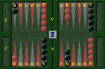

![[SGF FF[4] - Smart Game Format]](images/head.gif)
 Coordinate system for points and moves
`a' is the 1 point for white (and the 24 point for black), through to `x' which is the 24 point for white (and the 1 point for black). `y' is the bar, and `z' is the bearoff tray.
Other legal moves include `double', `take' and `drop' for cube action (where `double' includes initial and subsequent doubles, as well as beavers).
Examples of legal moves include:
White = O = 0 Black = X = 1
Property: CO
Propvalue: simpletext
Propertytype: setup
Function: Set the position of the doubling cube. The value
should be `b' (black), `w' (white), `c' (centred), or `n'
(none -- for cubeless or Crawford games).
Related: CV
Property: CV
Propvalue: number
Propertytype: setup
Function: Set the value of the doubling cube. This value
defaults to 1 at the beginning of the game, but a CV property
should be added when setting up a position where a double has
been made, or at the beginning of a money game if automatic
doubles occur.
Related: CP
Property: DI
Propvalue: number
Propertytype: setup
Function: Set the dice without moving (this could be useful for
creating problem positions, e.g. DI[31])
Related: CO
Property: MI
Propvalue: list of composed simpletext ':' simpletext
Propertytype: game-info
Function: Specifies information about the match the game belongs to.
This property should specify a list of tag/value pairs, where
the allowable tags are case-insensitive, and include:
length - the match length (number of points); value should
be a number
game - the number of this game within the match (the
first game is 1); value should be a number
bs - the score for Black at the start of the game;
value should be a number
ws - the score for White at the start of the game;
value should be a number
Unknown tags should be ignored (a warning may be produced).
The order of tags in the list is not significant. An example
MI property is:
MI[length:7][game:3][ws:2][bs:1]
Related: EV, GN, RE, RO
Property: RE
Propvalue: simpletext
Propertytype: game-info
Function: The general RE property has the following
modification in backgammon games: in the case of a
resignation, the value should also specify the number of
points before the R(esign). Here are three example RE
properties:
RE[B+6R] -- White resigns a backgammon on a 2
cube (worth 6 points).
RE[W+2Resign] -- Black resigns a gammon on a 1 cube
(worth 2 points).
RE[W+4] -- Black drops a redouble to 8 (note
this is considered a normal loss, not
a resignation).
Related: RE
Property: RU
Propvalue: simpletext
Propertytype: game-info
Function: Backgammon-specific values for the general RU property
include the following:
[Crawford] -- the Crawford rule is being used in this match,
although this is not the Crawford game.
[Crawford:CrawfordGame] -- this IS the Crawford game.
[Jacoby] -- the Jacoby rule is in use for this game.
Related: RU